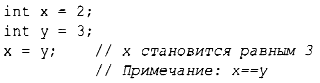
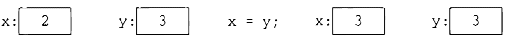
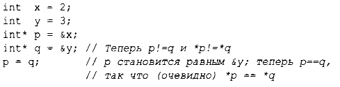
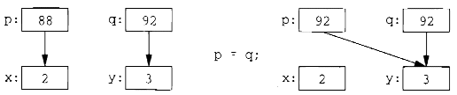
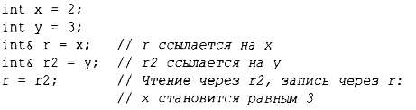
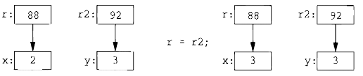

⇐1.9. Отображение на аппаратные средства 1.9.2. Инициализация⇒
Присваивание встроенных типов представляет собой простую машинную операцию копирования. Взгляните:
Это очевидно. Графически это можно представить следующим образом.
Обратите внимание, что эти два объекта независимы. Мы можем изменить значение у, не влияя на значение х. Например, присваивание х=99 не изменит значение у. В отличие от Java, С# и других языков (но подобно языку С) это верно для всех типов, а не только для int.
Если мы хотим, чтобы разные объекты ссылались на одно и то же (совместно используемое) значение, мы должны это указать. Так, мы могли бы использовать указатели:
Графически это можно представить следующим образом.
Я произвольно выбрал значения 88 и 92 в качестве адресов int. Здесь мы видим, что целевой объект присваивания получает значение от исходного объекта, что дает нам два независимых объекта (в данном случае - два указателя) с одинаковым значением. То есть присваивание p=q приводит к p==q. После присваивания p=q оба указателя указывают на переменную у.
И ссылка, и указатель ссылаются/указывают на объект, и оба они представлены в памяти в виде машинного адреса. Однако языковые правила их использования различны. Присвоение ссылки изменяет не то, на что ссылается ссылка (т.е. ссылка не перенацеливается на другой объект), а сам объект, на который она ссылается:
Графически это можно представить следующим образом.
Для обращения к значению, на которое указывает указатель, используется оператор разыменования*; для ссылок это делается автоматически (неявно).
После присваивания х=у для всех встроенных типов выполняется равенство х==у (как и для корректно спроектированных пользовательских типов (глава 2, "Пользовательские типы"), которые предоставляют операторы присваивания = и сравнения на равенство ==.